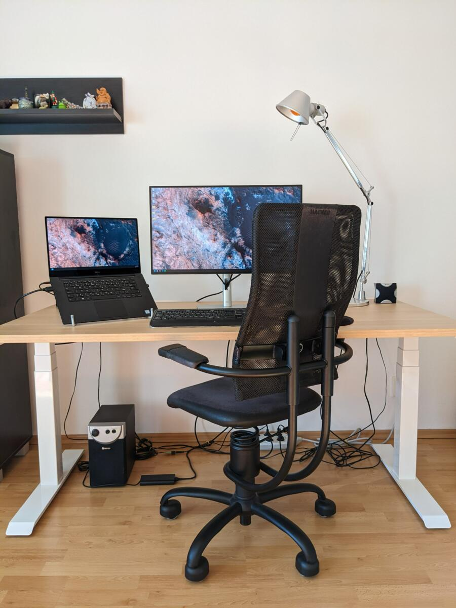
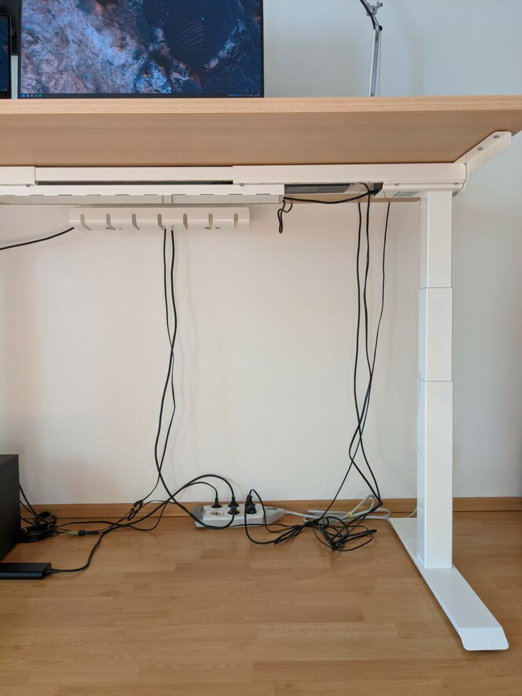
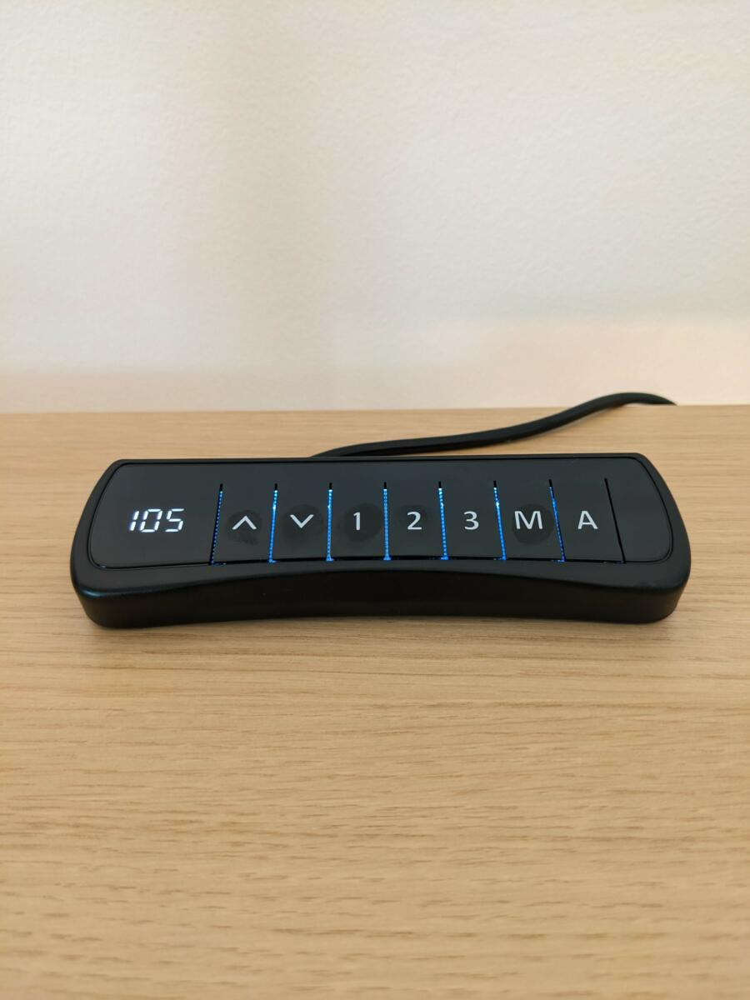

Dnes tento svůj virtuální prostor pro změnu propůjčím svému muži, aby se s vámi podělil o dojmy z testování své nové pracovní plochy :-) Pokud stejně jako on pracujete u počítače a pozorujete na svém těle řadu neblahých důsledků sedavého zaměstnání, možná vás jeho recenze inspiruje.
Dnešní článek bude vlastně o prvním kusu nábytku, který jsme si pořídili do nového domu. Jak již název napovídá, řeč je o pracovním výškově nastavitelném stole Delso, který se dá využívat jako klasický kancelářský stůl i dnes čím dál víc populární “standing desk”. Původně jsem chtěl s jeho koupí počkat, až budeme nastěhovaní v novém domě, ale nakonec to uspíšily mé vleklé zdravotní problémy, zhoršující se dlouhodobým sezením. Tomu se bohužel při svém převážně sedavém zaměstnání zcela vyhnout nemůžu, co se ale ovlivnit dá, je možnost občas si k práci prostě stoupnout - a přesně to mi stůl Delso umožňuje.

Nejprve jsem se samozřejmě pustil do důkladného průzkumu trhu, z něhož mi jako pomyslný vítěz nakonec vyšel model Delso Projuster. Stůl je stabilní a má robustní konstrukci. Deska je z laminátu v dekoru dubu a má rozměry 160 x 80 cm, což je naprosto dostačující pro to, aby se vám na něj vešel monitor, laptop, lampa, reproduktory a ještě zbylo dost místa pro další nezbytnosti. Deska působí kvalitně, ale do budoucna bych ji přesto rád nahradil za dubové dřevo, protože v domě se chceme vyhýbat imitacím a preferujeme přírodní materiály. To už je ale spíše věcí vkusu uživatele.

Co se týče pohybových vychytávek, stůl má 2 elektromotory, anti-kolizní systém (s dětmi člověk ocení) a paměťový ovladač. Do paměti lze uložit 3 polohy, ale reálně používám jen 2: sezení na 72 cm a stání na 108 cm. Ovladač zatím nemám ke stolu přišroubovaný, abych jej mohl schovávat před naším malým neposedou, který rád mačká tlačítka, zvláště ta, která svítí. Ke stolu jsem od Delso objednal také box na kabely, do něhož mám v plánu umístit pětipsa s přepěťovou ochranou. Jak lze vidět na fotce výše, cable management zatím není úplně dořešený, ale pracuje se na tom ;)

Montáž mi dala poměrně zabrat, ale bylo to z velké části i proto, že jsme museli nábytek v našem obývacím pokoji (který ale slouží zároveň i jako pracovna a dětský kout) trochu přeskládat a přeorganizovat, aby místnost dál mohla plnit všechny své funkce. Po 3 měsících poctivého testování můžu prohlásit, že jsem zatím velmi spokojen a stůl splňuje má očekávání. Snažím se pravidelně střídat sezení a stání - přes den více stojím a k večeru už spíše přecházím k sezení.